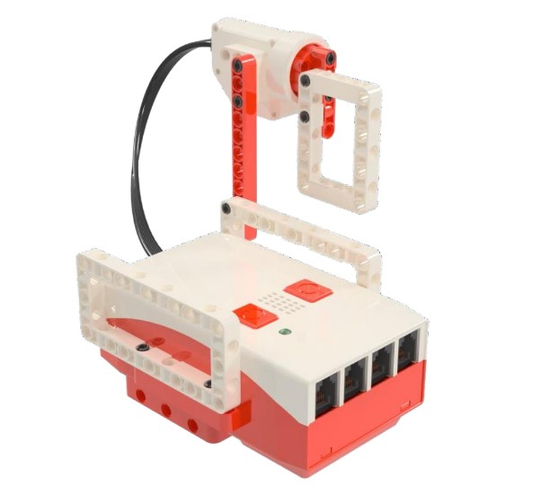
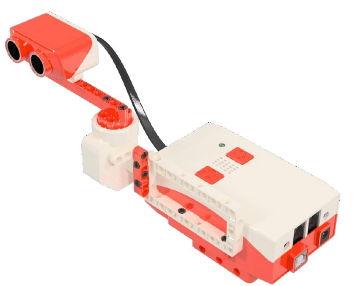
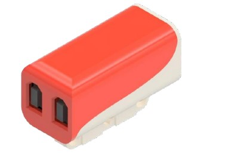
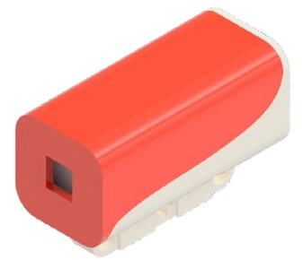

О чём это занятие?
На данном занятии учащиеся знакомятся с образовательным набором КЛИК. Они изучают названия, назначение и правила использования различных элементов конструктора, а также осваивают технику безопасности.
Основные элементы конструктора
За основу управления электронной частью робота отвечает плата Arduino. Все электронные компоненты совместимы с данной платой. Весь набор выдержан в едином стиле. Элементам несущей конструкции и крепёжной системы служит пластик ABS, который устойчив к механическим, термическим и химическим воздействиям. Все корпуса, в которых заключена электроника съёмные.
Блок управления
Мозгом роботизированного устройства является блок управления, который имеет два вывода для подключения DC моторов и шесть выводов для подключение датчиков и модулей. Отдельно выведен USB порт для загрузки программы и порт питания для зарядки аккумулятора. Блок оснащён пьезоэлементом для подачи звуковых сигналов и светодиодом для подачи световых сигналов. Также присутствуют кнопка включение/выключения и перезагрузки (сброс). Четвёртый порт необходим для подключения Bluetooth модуля.
-
Элементы блока управления:
- кнопка ВКЛ/ВЫКЛ
- кнопка Reset (перезагрузка)
- USB вход
- питание аккумулятора
- выводы для подключения DC моторов
- световой индикатор
- вывод звука П1, П2, П3, П4, П5,П6 – порты для подключения датчиков и модулей.
DC моторы
Данные моторы – это обычные электромоторы с редукторами на 3–5 Вольт. Оснащены дисковыми элементами с двух сторон для крепление колёс на шине или зубчатых колёс с использованием, как осей, так и штифтов. Моторы имеют легко отличимые провода со штекерами.

Стереопривод
Сервопривод предназначен для точного поворота. Точность поворота определяется градусной мерой. В наборе представлен сервопривод с градусом поворота 00 − 1800 Момент силы данного привода составляет 2 кг/см.
Ультразвуковой датчик расстояния
Ультразвуковой датчик расстояния измеряет расстояния до объекта. Данный датчик часто применяется в робототехнике. В наборе идет датчик HC-SR04. Диапазон измерения до 4 метров.
Датчик линии спаренный
Датчик линии в основном применяется для движение мобильного робота по чётко выделенной линии, либо белая, либо чёрная.
IR модуль
ИК модуль (IR) предназначен для приёма сигналов в инфракрасном диапазоне. С помощью IR пульта можно управлять роботизированным устройством КЛИК.

Датчик цвета
ИДатчик цвета применяется для определения цвета и освещённости. Применяется в устройствах, где необходимо распознать объекты разного цвета, либо провести замер освещённости.
Правила безопасности
- Работать с моторами только под присмотром учителя.
- Не прикасаться к подвижным частям во время работы конструкции.
- Следить за целостностью проводов и разъёмов.
- Своевременно выключать питание робота.
Форма контроля
Беседа — учащиеся обсуждают увиденное и услышанное.
Показ — преподаватель демонстрирует элементы конструктора.
Наблюдение — преподаватель оценивает включённость учащихся в обсуждение.